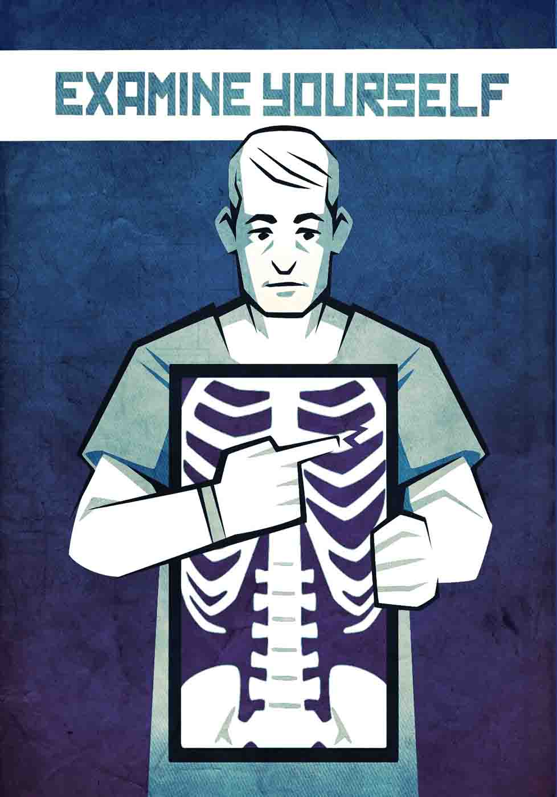

You are the expert on how your body looks and feels.
A few minutes of daily head-to-toe visual checks helps you notice changes, like a new freckle or unusual hair growth or loss.
Monthly checks — of skin and your male or female parts — give you information to share with your doctor.
And don't wait too long to share observations with your doctor. Call her if you notice a lump in the breast or genitals, a larger or asymmetrical mole, persistent skin changes (coloring, rash), or wounds or bruises that do not heal.
